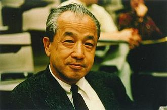

1911–2004
Japanese-American
Fixed-point theory, functional analysis, ergodic theory
Shizuo Kakutani was born in Osaka and studied at Tohoku University, where he earned his doctorate. He visited the Institute for Advanced Study in Princeton in 1940 and, unable to return to Japan during the war, remained in the United States. He joined Yale University in 1949, where he spent the rest of his career until retirement in 1982.
His most famous result is the fixed-point theorem that bears his name (1941): a set-valued map on a compact convex subset of Euclidean space, with non-empty convex values and a closed graph, has a fixed point. This generalises Brouwer's theorem from single-valued to set-valued maps and turned out to be exactly the tool Nash needed to prove that every finite game has an equilibrium. Through Nash's work, Kakutani's theorem became one of the most consequential results in mathematical economics.
Kakutani's interests were broad — he contributed to ergodic theory, probability, functional analysis, and topological groups. He was known for his gentle temperament and his ability to find elegant proofs of difficult results. His daughter Michiko Kakutani became one of America's most influential literary critics. Kakutani died in New Haven in 2004, aged 92.
| Phase | Page | Referenced for |
|---|---|---|
| Phase 15 | Zero-Sum Games and the Minimax Theorem | Kakutani's generalisation of Brouwer (1941) in minimax proof |
| Phase 15 | Nash Equilibrium | Kakutani's fixed-point theorem for Nash's existence proof |
| Phase 15 | Nash Equilibrium | Conditions of Kakutani's theorem verified for best-response correspondence |